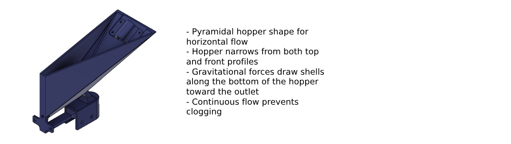

General Atomics Foam Shell Culling Station
Project WebsiteBackground
This project focuses on the design, fabrication, and testing of a Foam Shell Flow Culling Station to automate the sorting and inspection of foam shell targets used in inertial fusion energy (IFE) research at General Atomics, a leader in advanced defense and energy technologies.
Foam shells are critical components in IFE target assemblies and must meet stringent specifications in diameter, sphericity, wall thickness, and uniformity to achieve consistent laser-driven compression and ignition performance. The developed system automates the previously manual inspection and sorting of foam shells ranging from 3–6 mm in diameter, improving throughput, consistency, and process reliability.
Converging Component
The converging component was designed to intake a bulk mixture of water and foam shells from an operator and output a single-file stream of shells at a controlled rate. The design target was one shell per second, with a maximum allowable spacing of 15 seconds between shells. Continuous partial submersion in water was required to prevent shell drying, static adhesion, or sticking to surfaces.
After evaluating several configurations, the final design selected was an angled pyramidal hopper. This geometry was chosen for its ability to leverage gravity-assisted flow and to provide a slower, more controlled discharge rate compared to a conical hopper. The wide upper inlet allows for convenient water circulation and prevents clogging while maintaining a consistent fluid level in the hopper.
The timing device selected was a rotating plate mechanism, chosen for its simplicity, reliability, and precise control over feed rate. Key design considerations included optimizing the inlet reservoir efficiency and ensuring effective shell separation prior to sensing. The hopper exit was designed with an 80° converging angle, determined experimentally to minimize clogging across shell geometries while maintaining sufficient water volume for stable flow.
System parameters such as pump flow rate and plate rotation speed were empirically calibrated by measuring water discharge rates over time to ensure the hopper remained consistently filled and capable of maintaining the desired shell feed rate.

Results
Testing of the converging and timing assembly demonstrated that flow consistency was highly sensitive to shell dimensional variance. The hopper exhibited an average 50% clogging rate when shell diameters deviated by more than ±33% from the nominal design size. Oversized shells failed to pass through the outlet, while undersized shells tended to aggregate and obstruct flow.
For instance, when the system was tuned for 6 mm shells but tested with 4 mm shells, clogging occurred frequently. However, when shell diameters were within ±10% of the nominal design specification, flow stability and convergence efficiency improved substantially.
To accommodate variability, two modular hopper and plate assemblies were fabricated—one optimized for 3–4 mm shells and another for 5–6 mm shells. These modules are interchangeable and can be easily swapped by the operator, enabling efficient adaptation to different shell batches without system reconfiguration.